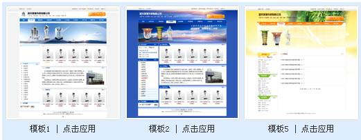

如何操作企业站
| 企业站需要生成才能使用 |
| 生成企业站 选择模板： 打开“企业站模板管理”页面： |
| 如果需要选择其他模板，可点击“选择其他模板”或点击“取消”按钮： |
|  |
| 选择某个模板后，点击“点击应用”：（例 选择模板5） |
| 点击“保存”，将模板路径存入数据库。 生成： 生成主页： 点击“生成企业站主页”： |
| 选择主页模板：点击 |
| 打开文件夹，选择主页模板index.html |
| 点击： |
| 可预览生成的企业站首页： |
| 生成企业站栏目：生成企业站中除“首页”外的最新供应，资质荣誉等栏目 |
| 点击“生成企业站栏目”： |
选择生成某个栏目，也可直接点击生成所有栏目。 |
| 可全部生成或只生成某个栏目的详细页面。 |